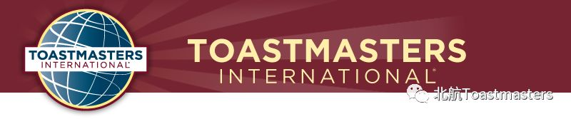
北航头马俱乐部从2013年成立以来，在上周五迎来了第200次会议，俱乐部现任官员们提前一周精心策划本次盛典，会议举办的非常成功，超过30位小伙伴集聚一堂，会议的形式丰富多彩，我们打破了以往的常规会议形式，安排了精彩的才艺表演，游戏互动，答谢仪式以及感恩切蛋糕环节，当晚给大家呈现了不一样的北航风采。
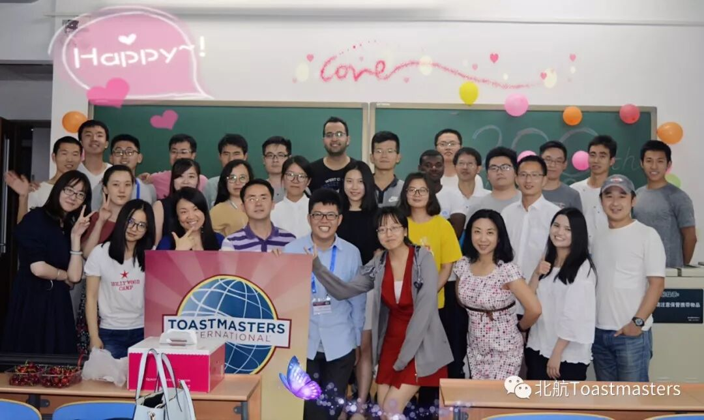
开场首先由北航头马俱乐部现任主席Cyril 邀请历届俱乐部的前任主席们，分享北航头马俱乐部的成长史以及讲述他们与头马的故事, 相遇便是缘，分享从相遇到收获一路走来，满满的精神食粮
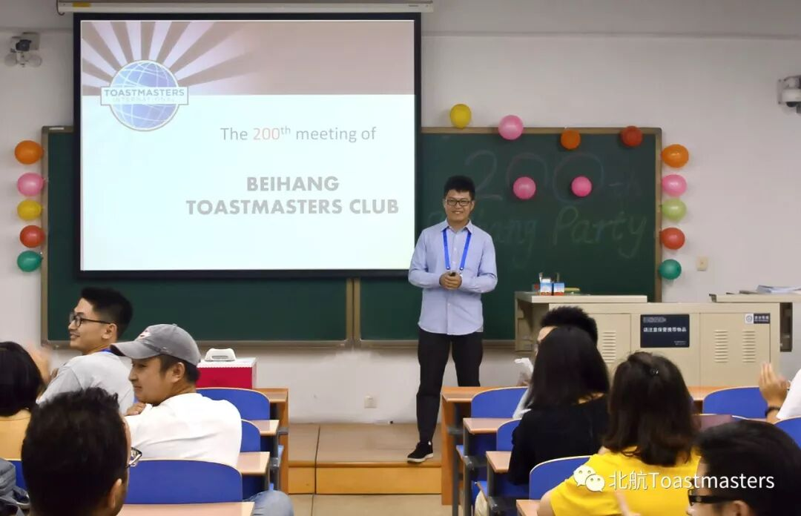
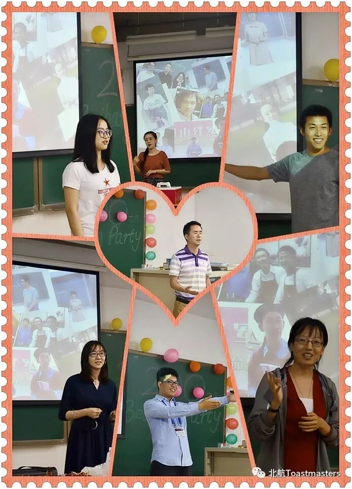
此次盛宴我们D中区长Kiwi 不但亲临现场，还给我们北航的小伙伴们带来了开场热舞 YMCA，每个小伙伴都参与其中，大家伴随歌声舞动，乐享其中
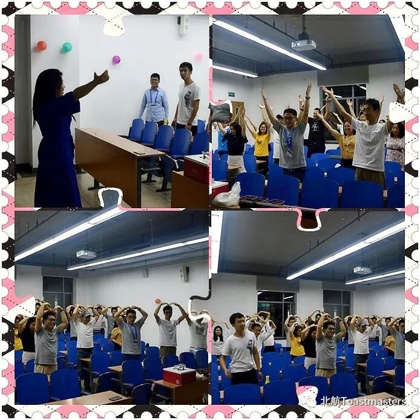
热舞之后，我们北航俱乐部秘书长Michael给大家带了优雅的笛声，《关山月》以及《平沙落雁》，把小伙伴们带到了不一样的意境，笛曲声令人回味无穷
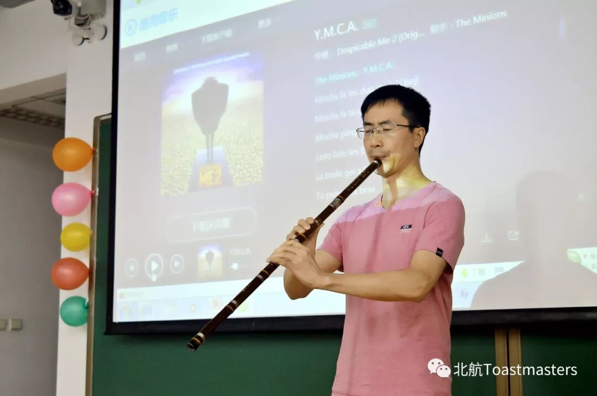
Miguel 来自南非的小伙伴，表演唱英文歌<Perfect>,使现场观众听着如痴如醉
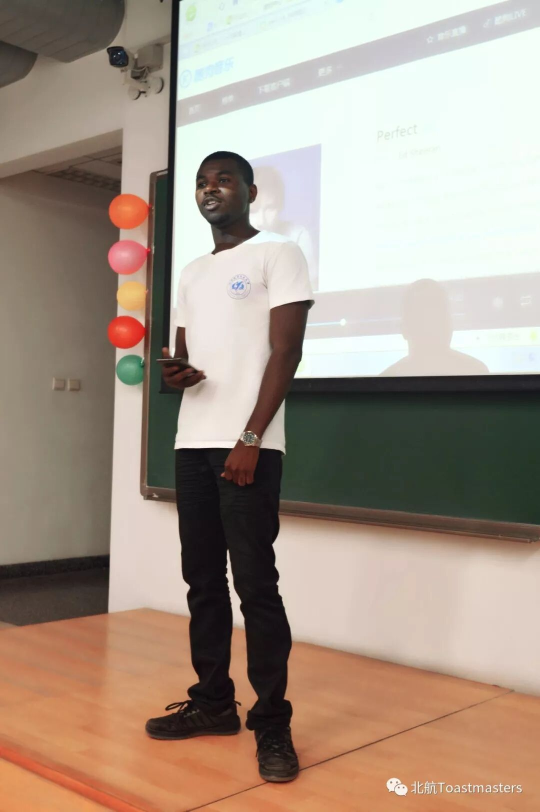
表演环节结束后，迎来了第一个游戏环节“你来比划我来猜”，由我们新加入的会员Sky主持，小伙伴们都非常的积极踊跃，参与热情意想不到的高涨，最终从5组比赛选手里面，选出最佳默契拍档，并准备了精美的小礼品
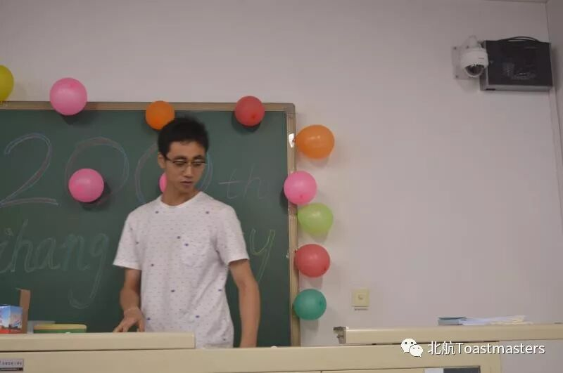
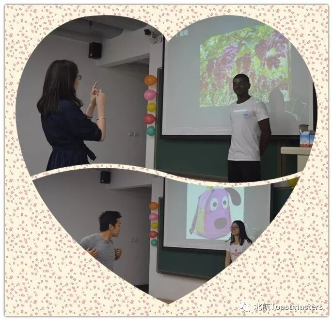
中场休息后，进入了本次盛宴第二个游戏环节<击鼓传花>，由北航会员VPPR Claire来主持，“击鼓传花" 被击鼓传到的小伙伴需要上台来参与表演以及游戏环节，如：用自己的家乡话来演绎经典电影《大话西游》其中一段经典告白，来自五湖四海的小伙伴们演绎了不下10多个版本的《大话西游》，语言十分风趣，台下笑声不断,以及成语接龙，无言的沟通等趣味游戏，让每个人小伙伴都有机会参与其中，更多的了解彼此
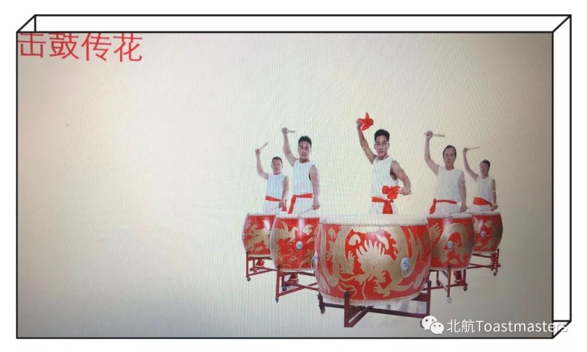
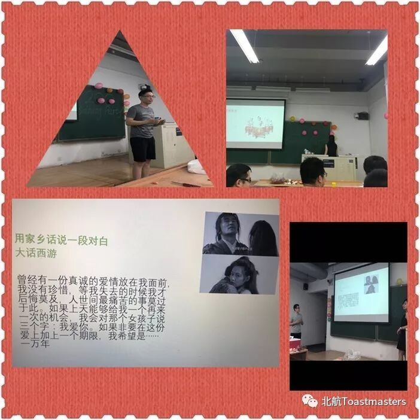
感恩环节
感谢我们D中区长Kiwi从始至终的大力支持，感谢Starup D中区小区长Jimmy给北航俱乐部的指导和经验分享
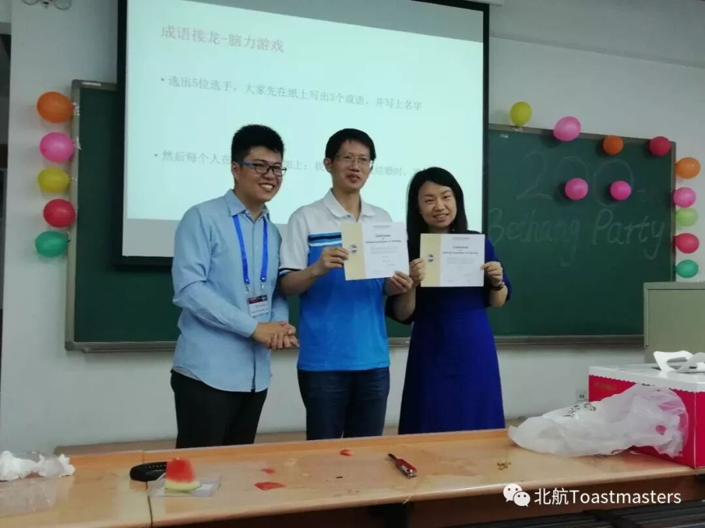
感谢来自摩托罗达俱乐部董宇姐姐，董宇姐姐多次参加我们北航头马俱乐部的会议，每次都给出非常有建设性的宝贵意见
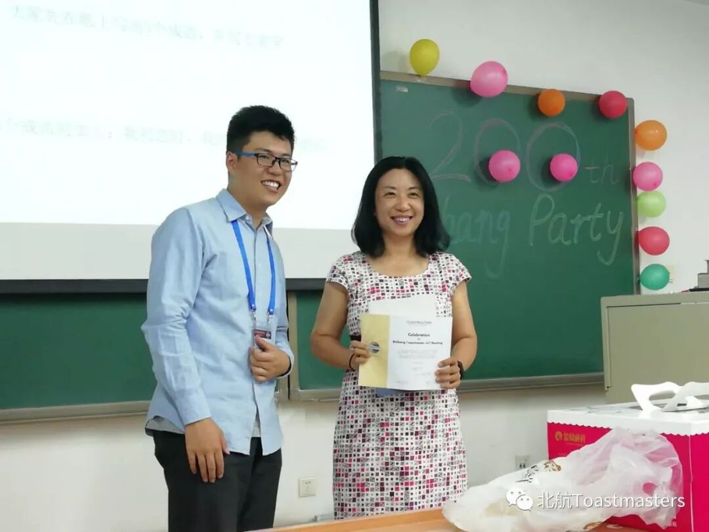
感谢我们兄弟俱乐部Jason来自信必优俱乐部现任主席
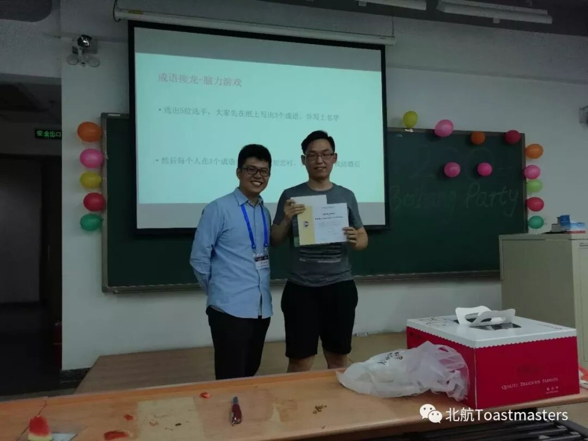
感谢我们兄弟俱乐部Bree来自雅典娜俱乐部的VPE
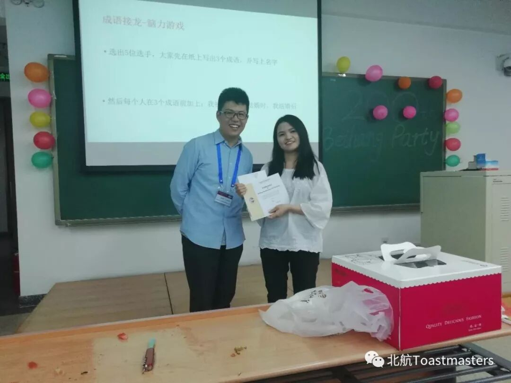
最后我们以一首<生日歌>结束了本次盛典，感恩头马让我们相知，感恩我们头马一家人对北航俱乐部的支持，感谢每次会议都积极参会的小伙伴们，感谢每一个人的付出，北航头马俱乐部的成长离不开你们每一个人，因为有你们，让我们有信心，我们未来会更好。
每一个人都是一朵含苞欲放的花，每一朵花都有属于自己的精彩，希望我们可以在北航头马这个舞台上找到属于我们自己的精彩，尽情绽放！
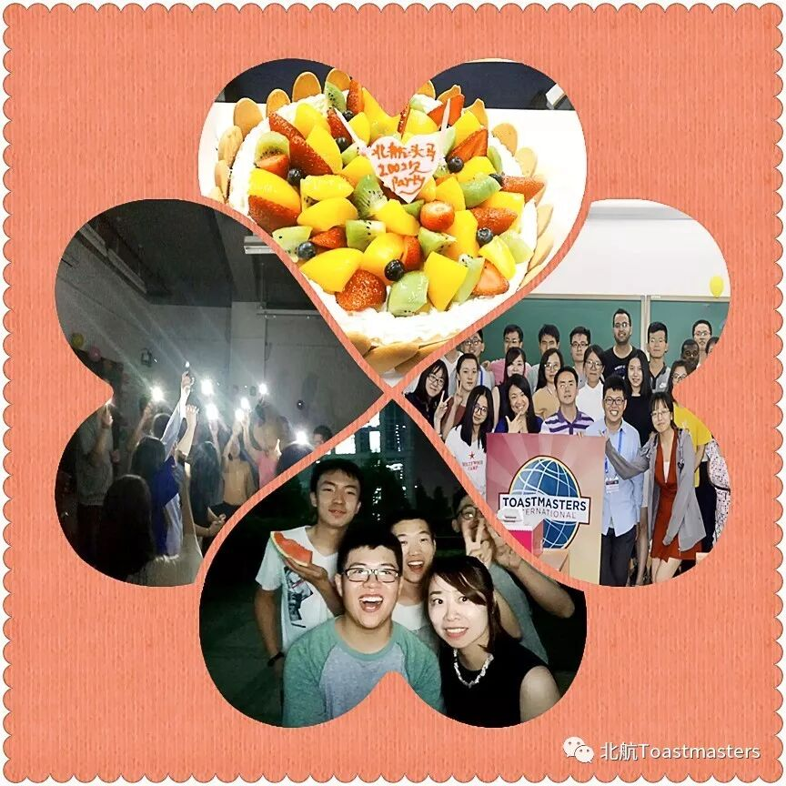
BeihangToastmasters Club is a students' union. At the same time, we belong to a non-profit international organization calledToastmasters International.
Toastmasters International (TI) is a non-profit educational organization that operates clubs worldwide for the purpose of helping members improve their communication, public speaking, and leadership skills.You can find us by the following map of Beihang University.

https://mp.weixin.qq.com/s/PuB0MmTNaiEz7bbSO_u6lg
本页为抢救式本地归档，图文已永久保存。